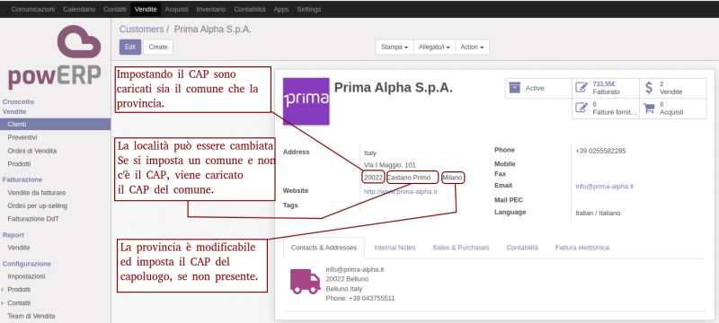

Managing Italian addresses

Gestione indirizzi italiani






This module add following data:

Questo modulo fornisce i dati precompilati di:
Inoltre gestisce alcuni automatistmi durante la compilazione del campi anagrafici.
La videata dell'anagrafica è modificata come da consuetudine italiana:
CAP - Località - Provincia
mentre nella versione originale di Odoo il CAP è posto dopo la provincia come nel formato anglosassone.
| Feature | Funzione | Status | Notes | Note | |
| City from ZIP | Città da CAP | ✅ | Propone città da CAP; città modificabile | ||
| Multizone ZIP | CAP Multizona | ✅ | Riconoscimento CAP multizona | ||
| District from ZIP | Provincia da CAP | ✅ | Compila la provincia dal CAP | ||
| Check for ZIP & district | Controllo coerenza CAP e provincia | ✅ | Verifica coerenza di CAP e provincia | ||
| Check for duplicate vat | Controllo partita IVA duplicata | ✅ | Controllo non bloccante | ||
Authors | Autori:
Contributors | Partecipanti:
This module is maintained by the SHS_AV s.r.l..
This module is part of l10n-italy project.
Published information on | Informazioni pubblicate: 2024-06-09